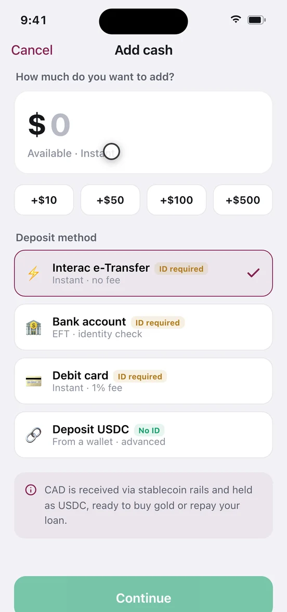

Adding and withdrawing cash
Your cash balance is the dollar side of your Auri account — what you buy gold with, repay a loan with, and pull back out to your bank. This page covers every rail in and out, what each costs, how long it takes, and what you actually hold while the money sits there.
Why people keep a cash balance
Three reasons. A buy funded from cash is the fastest route into gold, because it skips the funding leg entirely. Repayments and collateral unlocks on a loan are paid out of cash. And Auto-Invest can auto-debit it on schedule. If you only make one-off bank-funded buys, you can ignore cash completely.
What a cash balance actually is
It is not dollars in a bank account with your name on it. Your local currency is received on regulated payment rails, converted, and held as USDC — a US-dollar stablecoin — on Arbitrum, ready to buy gold or repay a loan. The asset is native USDC on Arbitrum One, contract 0xaf88d065e77c8cC2239327C5EDb3A432268e5831, the same dollar you borrow against your gold.
- Not a deposit, not insured. Auri is not a bank. Deposit-insurance and investor-protection schemes cover bank deposits and brokerage accounts, not stablecoins: CDIC and CIPF in Canada, FDIC, NCUA and SIPC in the US, and equivalents elsewhere, do not apply here. They are named to show what does not cover you.
- A stablecoin targets one dollar; it does not guarantee one. USDC is an obligation of its issuer, redeemable on that issuer's terms. The peg is backed by reserves, not by a government.
- Your display currency is not what you hold. Auri offers 28 display currencies, but that setting only changes the number on screen. The unit underneath is US-dollar-referenced, so a balance shown in Canadian dollars, rupees or pounds moves whenever that currency moves against the dollar — including on days you do nothing.
Cash carries currency risk if you do not think in US dollars, issuer risk no insurance absorbs, and it pays you nothing — no interest accrues on cash anywhere in the app. It is a staging area, not a savings account.
One honest ambiguity: the app calls your gold vault self-custody and shows its address, while a sell receipt labels the matching cash credit as an internal USDC ledger entry. Whether cash sits in a wallet you control is UNKNOWN. See proof and custody.
Which rails you can use, and where
The rails you see depend on your country of residence. Interac e-Transfer is a Canadian domestic rail and exists nowhere else; in the US the equivalent is a bank transfer. Auri's profile offers 45 countries, but that governs display and eligibility, not rails — the deposit-method screen shows only what you can use. Anything unstated is marked UNKNOWN.
| Rail | Where it works | Direction | Fee | Timing shown in the app | ID check |
|---|---|---|---|---|---|
| Interac e-Transfer | Canada only | In and out | Deposit: no fee. Withdrawal: CA$1.50 | Instant both ways | Required |
| Bank transfer (EFT in Canada) | Canada confirmed; US and elsewhere UNKNOWN | In and out | No fee stated | Deposit: available in 1–2 hours, settlement completing behind it. Withdrawal: 1–2 business days | Required |
| Debit card | Canada confirmed; elsewhere UNKNOWN | Deposit only | 1% of the amount | Instant | Required |
| USDC on Arbitrum | Anywhere you can hold a wallet | In and out (shown as "Crypto wallet" outbound) | No Auri fee stated; you pay the Arbitrum network fee from the sending wallet | Deposit: credited when the transfer confirms, no time quoted. Withdrawal: minutes | Not required — tagged "No ID"; step-up approval outbound |
Auri's 0.49% fee applies when you buy or sell gold, not when you move cash. The only cash fees are the 1% debit-card deposit and the CA$1.50 Interac withdrawal. Minimum and maximum amounts are UNKNOWN — none appear on any screen. Full list on the reference page.
Card top-ups and cross-border remittance are not live. The card is at waitlist stage and remittance has not launched, so neither is a way to spend cash today.
Before you start
- An Auri account — see getting started.
- Interac, bank or debit: a one-time identity check. Method rows are tagged "ID required" or "ID verified" before you pick.
- Bank and Interac withdrawals: a destination account in your own name.
- USDC either way: a wallet that supports Arbitrum.
- Withdrawing to an external wallet: a passkey, or an authenticator app plus access to your email.
The check fires only on a buy, add-cash or withdrawal using Interac, a bank or a debit card, and only the first time: legal name and date of birth, a photo of your licence or passport, then a selfie. Usually instant, and it returns you to the screen you came from. In Canada the app cites FINTRAC rules; the equivalent elsewhere is UNKNOWN.
Add cash from Interac, a bank or a card
About a minute · no fee on Interac and bank deposits, 1% on debit · no cancel step once you confirm.
- Open Add cash. On the Actions tab, in the Cash group, or from the move-money menu on Home.
- Enter the amount. Currency only — no gram or ounce units here, unlike a gold buy. Chips add +$10, +$50, +$100 and +$500.
- Choose a deposit method. Interac e-Transfer, Bank account, Debit card, or Deposit USDC from a wallet.
- Clear the identity check if prompted. You return to the same flow when it completes.
- Read the review screen. Four lines: You add, Method, Held as USDC, Available — instant for Interac and debit, 1–2 hours for a bank transfer. People skim "Held as USDC"; it is telling you what you will own.
- Confirm. Processing tracks each leg live — receiving funds, converting to USDC, updating your balance, plus awaiting-bank-settlement for transfers. Minimise it and the job keeps running, then notifies you.

What you'll see when it works. A success screen, an updated balance on Home, and a row in Activity under the Cash filter — expand it for each leg with its reference or transaction hash.
Deposit USDC from your own wallet
This path works differently: instead of a review screen, the button becomes Deposit and Auri shows a deposit address labelled for USDC on Arbitrum, with a copy button. No identity check, no Auri fee, no quoted arrival time — the balance updates when the transfer confirms, and the network fee comes from the sending wallet.
Send only USDC, only on Arbitrum. Other tokens or networks sent to that address may be lost, and blockchain transfers cannot be reversed. Send a small test amount the first time. Whether a wrong-network send can be recovered is UNKNOWN — assume not.
Withdraw cash
Under a minute to submit · CA$1.50 on Interac, no fee stated on bank transfer · irreversible once sent.
- Open Withdraw cash. From the Cash group on Actions, or the move-money menu.
- Enter the amount. Chips add +$10, +$50 and +$100; Max fills your whole balance. Cash is never locked as collateral — only gold is — so the full balance stays withdrawable even with a loan open.
- Pick a destination. Bank account (1–2 business days), Interac e-Transfer (instant, CA$1.50), or Crypto wallet, which reveals an address field.
- Clear the identity check if prompted. Bank and Interac rails only.
- Approve the step-up if you are sending to a wallet. A passkey, or two 6-digit codes — one emailed, one from your authenticator app. Auri cannot approve this step for you.
- Read the review screen. You withdraw, To, Arrives — 1–2 days for a bank transfer, instant for Interac, minutes for a wallet.
- Confirm. Processing shows redeeming USDC, converting to your currency, sending to your bank. The Activity receipt keeps the same breakdown.
Bank and Interac withdrawals can only go to an account in your own name — third-party payouts are not permitted, so a withdrawal cannot be used to pay someone else. A USDC withdrawal goes out on Arbitrum and cannot be reversed; check the address character by character.
Timing, and what happens underneath
Every fiat leg settles on a schedule Auri does not control; every on-chain leg is fast. That asymmetry explains all the timings above. One inconsistency to know: add-cash quotes 1–2 hours for a bank transfer, while paying for gold straight from a bank transfer quotes 1–2 business days — plan around the longer figure and trust the number on your own review screen. Weekend and holiday cut-offs are UNKNOWN. Auri's rewards catalogue includes a fee-waiver reward covering one withdrawal, shown as worth CA$12.
When a cash balance makes sense — and when it doesn't
It makes sense when cash is a tool, not a destination. If you buy on a schedule, funding Auto-Invest from cash means a failed bank debit never skips a cycle. If a loan is open, a buffer lets you repay or unlock collateral the same day rather than waiting on a transfer — the unlock flow pays the matching part of the loan from cash, and shows a shortfall if the money is not there.
It stops making sense when cash becomes the destination. Hold a balance for months and you hold a stablecoin with no interest, no insurance and — unless you think in US dollars — an exchange-rate exposure you did not choose. Money you need in a bank account soon belongs in a bank account: the round trip costs a rail fee each way plus one to two business days at the bank end. Two mistakes in particular: funding cash with money earmarked for a bill due this week, since the deposit is instant but the exit is not; and treating a balance as a repayment plan, when the consequences of an unpaid loan land on your gold — see liquidation and the risk page.
What can go wrong
- "My deposit says pending." Bank transfers carry an awaiting-settlement step. Expand the row in Activity to see which leg is outstanding.
- "I sent USDC and nothing arrived." Almost always the wrong network or token. The address accepts USDC on Arbitrum only; recovery is
UNKNOWN. - "My withdrawal was rejected over the account name." Payouts must go to an account in your own name. Withdraw to your own account, then pay the other person from there.
- "Why ID for a card deposit but not a USDC transfer?" Expected — the check is tied to fiat rails, not to the amount.
- "The app wants two codes." The step-up on an external-wallet withdrawal: the emailed code and your authenticator code, or a passkey instead.
Related
Fees and limits: reference. What backs the gold and who holds it: proof and custody. The risks in plain language: risks.
Next step: buy gold from your cash balance — the fastest path the product has.
Nothing on this page is financial, tax or legal advice.
Auri is a non-custodial software platform, not a bank. Nothing here is financial, tax or legal advice. Digital assets are not deposits and are not covered by any deposit-insurance scheme. Screenshots come from a demo build, so the figures in them are illustrative. Full risk & legal notice.